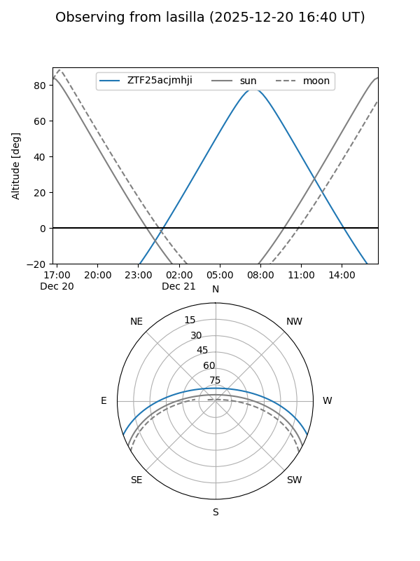
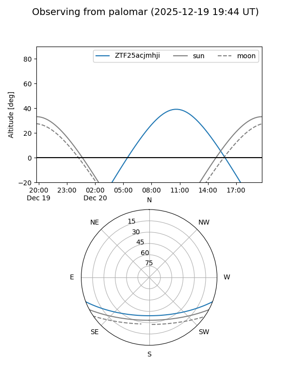
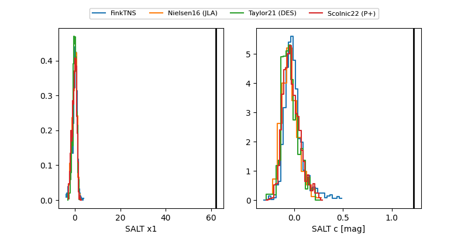

ZTF25acjmhji
Target ZTF25acjmhji at 2025-12-21 09:53
Aliases and brokers:
FINK: fink-portal.org/ZTF25acjmhji
Lasair: lasair-ztf.lsst.ac.uk/objects/ZTF25acjmhji
ALeRCE: alerce.online/object/ZTF25acjmhji
alt names
ZTF25acjmhji (ztf,fink_ztf)
Coordinates:
equatorial (ra, dec) = 131.5482,-17.33177
equatorial (HMS+DMS) = 08:46:11.57,-17:19:54.39
galactic (l, b) = (242.4477,+15.78342)
Flags:
Photometry:
last ztfg=18.10, ztfr=18.56
1 ztfg, 1 ztfr detections
Lightcurve

Visibility


Additional plots
